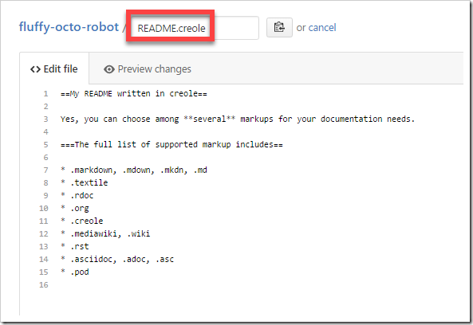
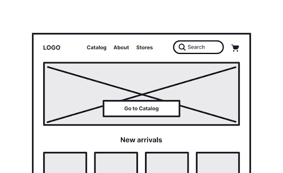

README.md File
A README file explains what a project does, how to install it, and how to use it. It helps other developers understand the project quickly.
Read moreLearn about README files, wireframes, and Git branches.

A README file explains what a project does, how to install it, and how to use it. It helps other developers understand the project quickly.
Read more
A wireframe is a simple visual plan of a webpage. It shows the layout and structure before the website is built.
Read more
A Git branch allows developers to work on new features without changing the main version of a project. Changes can be merged later when they are ready.
Read more